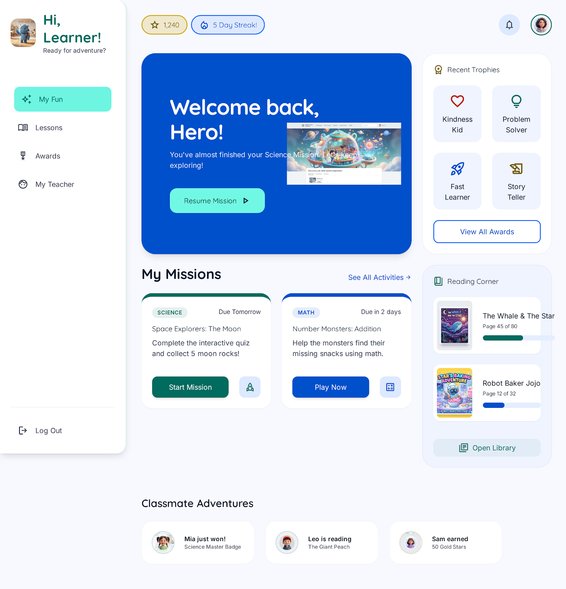
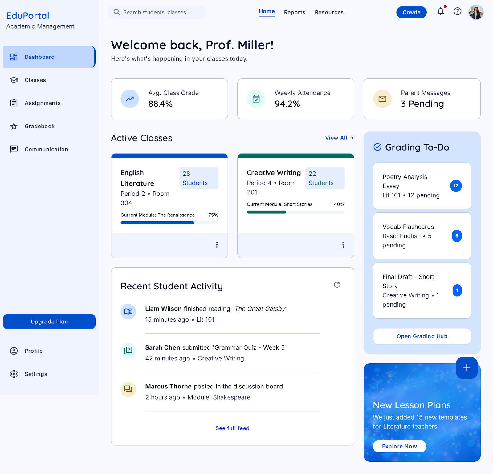
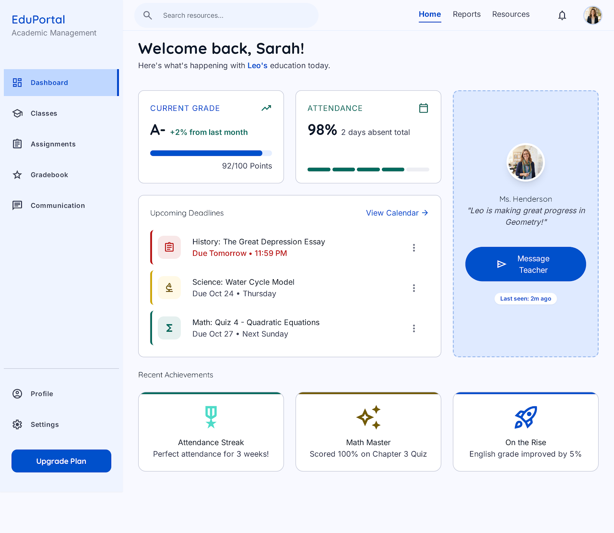
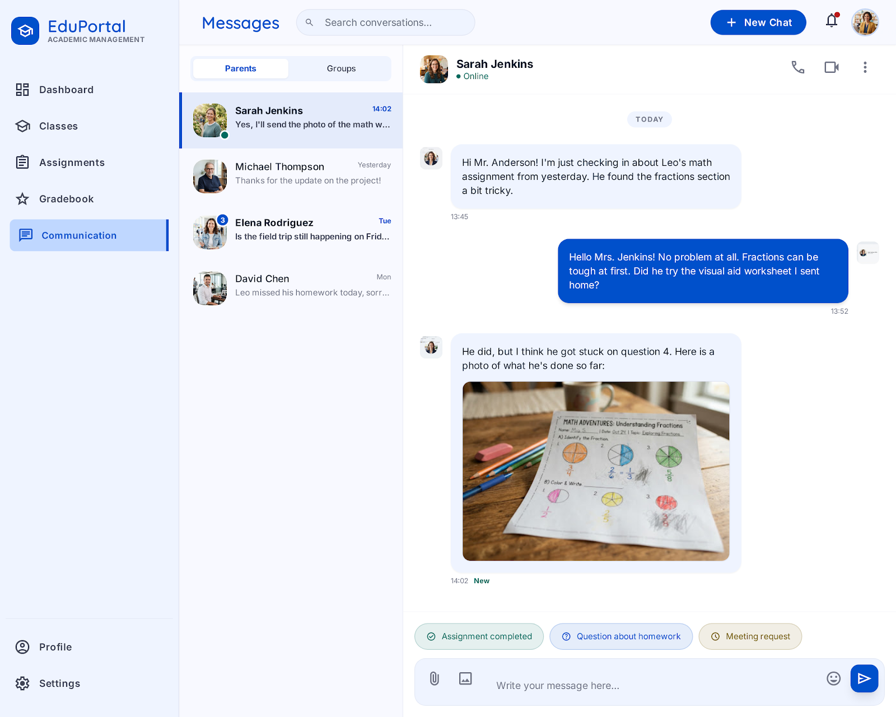

Student Portal
A cheerful student dashboard with assignments, subject progress, and achievement-focused learning cards.
Browse the exported student, teacher, parent, and communication screens from the EduConnect prototype.

A cheerful student dashboard with assignments, subject progress, and achievement-focused learning cards.
The alternate student view from the export, ready for comparison or follow-on refinement.

A classroom operations view for tracking student work, priorities, and daily teaching tasks.

A parent-facing progress and communication view for keeping families connected to learning.

A messaging-centered workspace for announcements, teacher-family conversations, and updates.